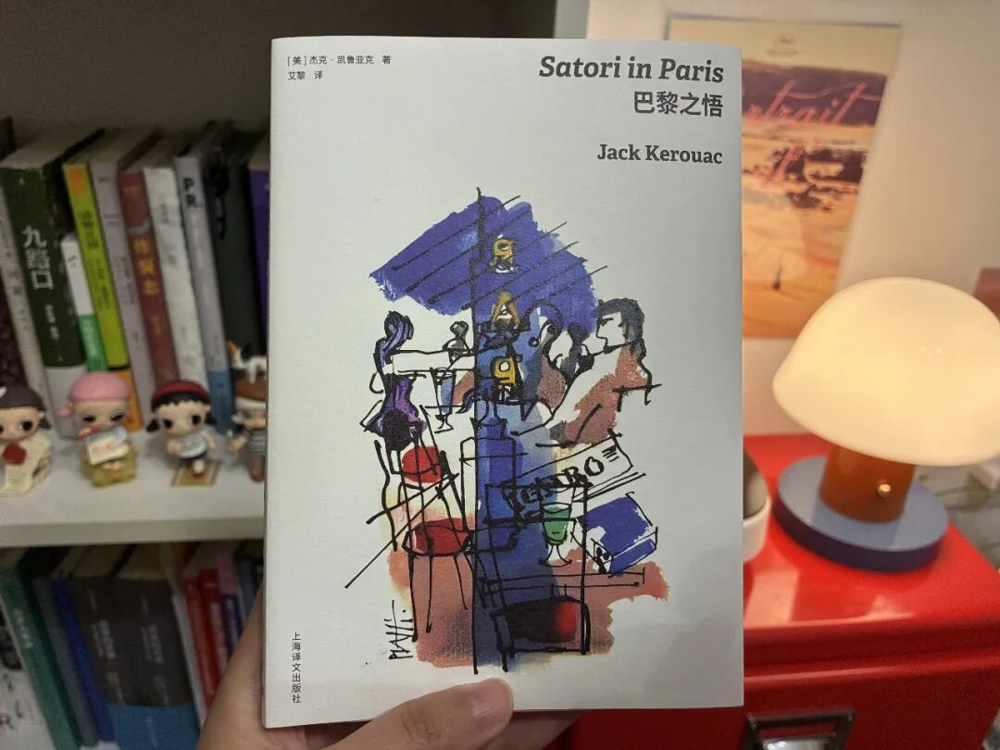
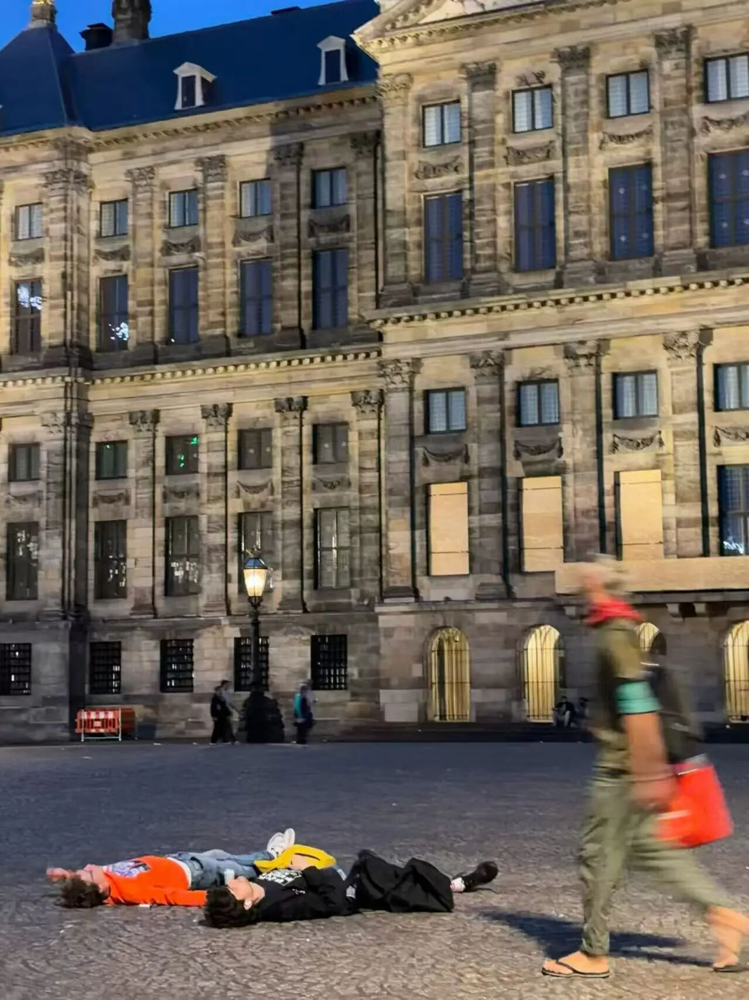
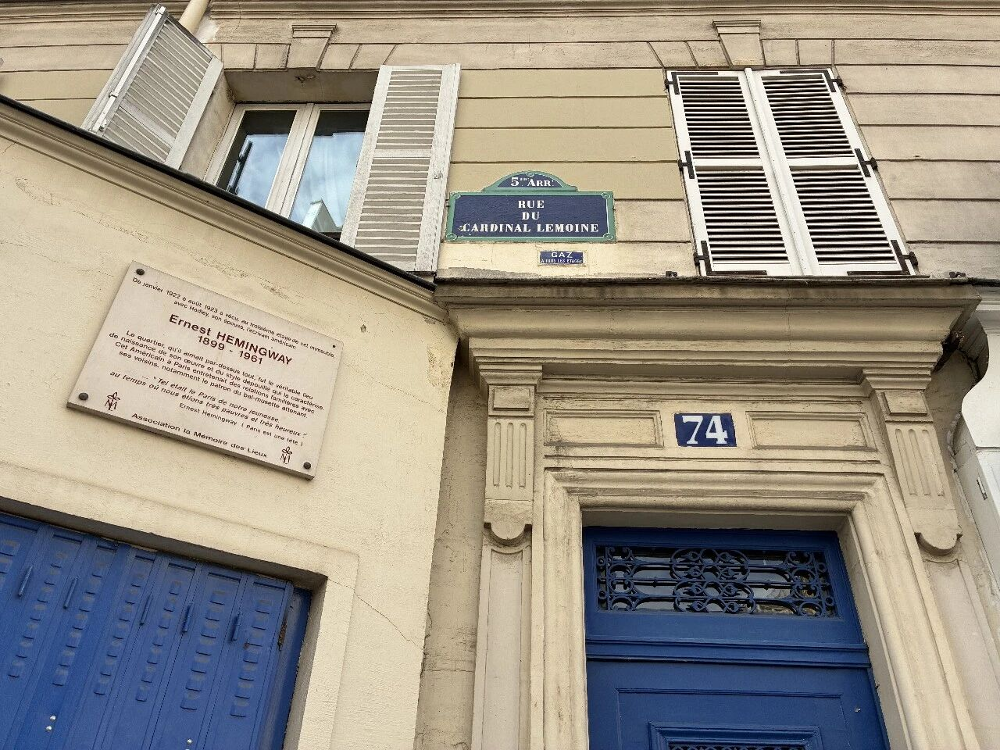
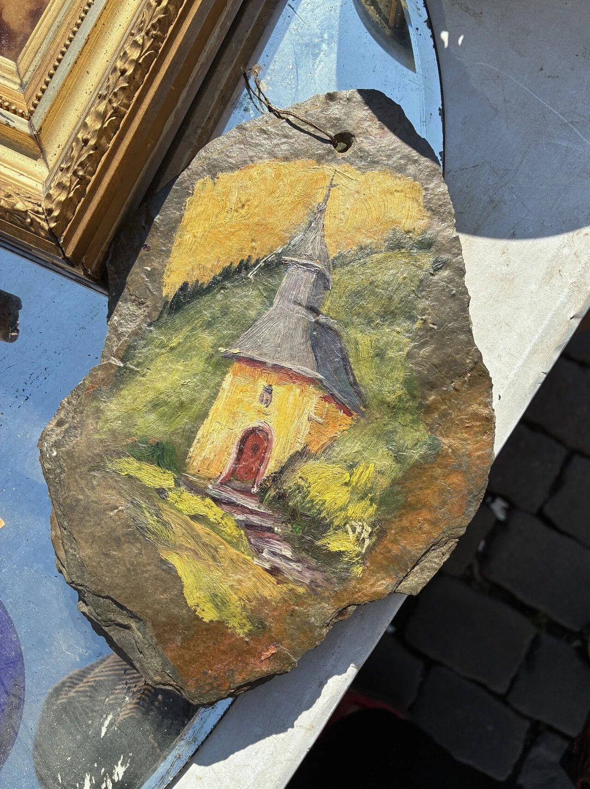
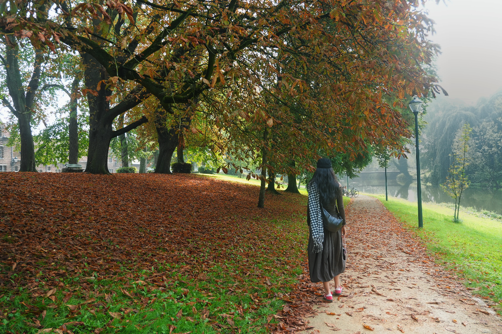

九月在银川出差的缝隙中，在蔷薇书店买了本凯鲁亚克的《巴黎之悟》。回到杭州后断断续续地读，最近才读完。
书里的巴黎，是还在用法郎的巴黎。凯鲁亚克没赶上飞机、没赶上火车，没达成原本的行程目的，但是他在这十日发现了一种可以就这么度过这趟旅程的方式——醉醺醺的，口无遮拦的，什么都没干成的，一种方式。
我的这趟国庆欧洲行，自然很不相同。我们做了充分的行程规划，去了彼此想带对方体验的地方，也给假期留了一点松散的时间。十来天里，干了很多事。
9 月 26 日出发落地布鲁塞尔。经往根特、布鲁日、阿姆斯特丹、巴黎，再回到布鲁塞尔，10 月 6 日回国。
现在回想，觉得最珍贵的还是那些规划之外的片刻：一座广场上的微雨，一张公园长椅，一顿临时决定的晚饭，一家原本不在名单里的书店。
刚到根特时，天气已经有点清冷。周日，外国游客鲜少，各色商店也很晚才开门，上午我们在古城小巷中转悠，吃了一大份特色薯条。碰巧发现民宿附近有一家复古书店，带着小院子，里面竟然有一个打字机博物馆。那种店大概不会出现在“必去清单”上，却会让人忍不住慢下来，看看旧机器和旧纸张如何安静地留在时间里。
从根特到布鲁日，再到阿姆斯特丹，城市的节奏一点点变得明亮起来。布鲁日的游客多了许多，商业化程度也明显高于根特，没有留下什么特别的印象。反倒是在之后的阿姆斯特丹，遇见了一些很难忘记的画面。
傍晚下着微雨，我在王宫广场上看见两个年轻人直接躺在地上，正对着王宫聊天、抽烟，旁若无人。地面潮湿，天气阴冷，也算不上适合久留，但他们看起来完全不急着去任何地方，不急着起来躲雨，仿佛是躺在一块阳光明媚的草地上。

那个画面让我停了很久。我们的日常，已经太少这样恣意纵情的时刻。
旅行时，我们很容易把每天都安排好要做些什么、要去玩哪里，生怕错过一座城市真正值得看的东西。可那两个年轻人似乎没有在“看”什么。他们只是把湿漉漉的阿姆斯特丹王宫广场当作可以躺一会儿的地方，无所事事，淋雨聊天。
后来我在巴黎和布鲁塞尔的公园里，也不断看到类似的场景。草坪带着一点野生感，人们坐在地上聊天、晒太阳、看书，或者只是发呆。公园不只是被修剪整齐、供人远观的景观，它容纳身体、闲暇和暂时没有目的的停留。
在阿姆斯特丹，还偶遇了一家叫 Property Of 的环保包袋店。它谈世界公民，也谈旅行的意义，店里提供免费的咖啡。旅行品牌当然有自己的商业表达，但坐在店里喝那杯咖啡时，我还是会觉得，这种对“做更好的旅行者”的倡议是有意思的。旅行并不只意味着抵达更多地方，也意味着把自己从熟悉的生活秩序里暂时移开，重新感受时间的速度，在陌生的环境里仍然可以看到真实的自己。
到巴黎之前，读完了安妮·埃尔诺的《外面的生活》。书里写的，是街道、商场、车厢和公共空间里那些看似普通的人与事。带着这本书继续走在几个欧洲城市里，我开始更留意身边的细节：广告牌上写着什么，人们怎样打发等车的时间，一座广场是否允许人随意坐下，人与人之间又如何共享一段不必交流的安静。
这一次到巴黎，和上次访学时很不一样。
上一次的白天被课程和参访排得很满，塞纳河、书店和拉丁区都只是日程表上来不及完成的名字，也没能感受到夜晚的巴黎。这一次，我住在一栋四百多年历史的公寓里，斜对面就是海明威的旧居，也是《流动的盛宴》所记录的那片巴黎。公寓玄关那扇小门上的拼色玻璃窗，据说已有两百年历史。

住在这样的房子里，历史并不会因此变得宏大。更多时候，它只是从每天推门、下楼、回家的动作里露出一点痕迹。
有天经过亨利四世中学，恰好遇到学生放学后的游行活动，附近几条路有警察封路。塞纳河边的旧书画摊上，一位大叔摆着自己画的小画。奥赛博物馆出来后，我们一路走去莎士比亚书店，到了门口才发现排着很长的队，便在隔壁买了咖啡，拐进一个意外遇到的小公园，在花丛边坐了一会儿。
巴黎当然有那些人人都会去看的地方。晚上八点，埃菲尔铁塔准时闪烁五分钟，离开时，附近有乐手在唱《Hallelujah》。但这一趟更让我记住的，是在超市买一点食物和酒，坐在塞纳河边吃晚饭；是没有为了完成书店打卡而继续排队；也是一座城市里，游行抗议、买画、读书、喝咖啡和散步在同一天自然发生。
从巴黎回布鲁塞尔的高铁上，读完了乔治·瑞泽尔的《社会的麦当劳化》。所谓“麦当劳化”，指的是现代生活越来越依赖效率、标准化、可计算和控制来组织一切。它让人更快地完成任务，也容易让人忘记，一些不够高效的过程本身仍然有价值。当效率被推到极致，意外、感受和人与人的差异，也容易被压缩掉。理性也会带来非理性、非人的侧影。
旅行也很容易被这样安排：用路线、评分、预约和打卡，把有限的时间压缩到极致，尽可能多地完成几个地点。可这样，就不再是一场旅行，而成了一场赶路。回头看，这趟旅行里最令人惊喜的，恰恰是那些没有效率可言的停留。
比如在布鲁塞尔，意外在跳蚤市场逛了很久。旧餐具、旧照片、艺术品、旧画和不知道属于谁的生活用品，被一件件摆在摊位上。它们不再服务于原来的主人，却没有立刻被丢弃。旅行中常见的古老建筑，总会让人感到某种遥远；跳蚤市场里的旧物则更接近平凡的日常，它们让时间变得有重量，也有具体的磨损。
临走前，我们带走了一幅画在岩板上的小油画，画面是一座小教堂。它未必是什么珍贵的古董，只是有一种很具体的旧感：画布换成了石头，时间仿佛也因此多了一点重量。
它让这次漫长的闲逛，有了一个可以被带回的结尾。

归途前的最后一天，我们坐在布鲁塞尔公园的长椅上。旁边的一位男士，至少一个多小时都保持着相同的姿势。他没有看手机，也没有睡着，只是安静地坐着，看着眼前的树和草地。
这样的时刻，在这趟旅程里并不少见。餐馆、酒馆、地铁和火车上，经常有人读纸质书；有人戴着耳机，有人只是望着窗外，并不急着拿出手机填满空白。书店依然热闹，地铁站和火车站里也常有文化演出和展览广告。
也是在同一张长椅上，我和小方发生了一场争吵。
争执起初来自对公园人群的观察，后来却很快偏离了它。这场争执，让我们彼此都意识到了一些问题，比如小方进入正式工作后被高效理性的环境所影响的极致务实；比如我在争论里缺少情绪上来之后继续倾听的能力。更重要的是，我们已经有一段时间，没有认真地、纯粹地讨论过一件事情了。那个下午，我意识到，空白不会自动带来理解。长椅给了我们停下来的时间，却没有让我们自动学会讨论。
所谓纯粹的讨论，并不意味着两个人永远心平气和，也不意味着每次都能达成一致。一个人提出自己的看法，另一个人可以补充、反驳。争论之后，可以一起等找到更完整的证据，再回到同一个问题上。两种不同的经验和判断，也可能在交谈中慢慢变成一个更周全的看法。
这样的讨论，在身边似乎越来越少了。日常交流常常带着任务、立场和情绪。我们习惯尽快得出结论，习惯从自己的经验里寻找证据，也习惯在对方的话里先听见不被理解的部分。久而久之，一场本来可以展开的讨论，很容易变成彼此证明自己没有错。
但这次争吵没有让我对旅行感到失望。有人可以真的什么都不做，在公园坐上一小时。那么我们也可以争吵、和好这样度过一小时。我们需要不玩手机，不急着反击，一段戒断网络的时间，更清楚地看到对方的诉求，更清楚地表达想法。
十天当然不足以让一个旅人概括另一些地方的生活。可这些片段还是让我感到一种久违的松弛：公共场所里似乎允许人暂时没有产出，允许一个人只是在那里，读几页书，听一会儿歌，和朋友聊天，或者看着雨落下来。

回到杭州以后，我也想继续练习减少手机的使用。把时间留给阅读、散步、写一点随笔，或者干脆什么也不做。手机太容易替我们填补每一段空白了，久了以后，那些脑海里闪现过的、尚未成形的感受和想法，也就再也不会浮现出来，自然也无法书写成文。
行李同样如此。回程整理行李时，我发现甚至有三件衣服都没有穿过。于是我记下了一点很实际的经验：下次要少带一些衣服。行李太多，会让每一次换城市、上楼梯、赶火车都变成额外的劳动。拍立得也可以留在家里，它很重，拍得不好又舍不得丢。其实，手机和记忆已经够用。
我想，下次出发时，除了减少行李，也给行程留一点空白。
就像这次一样，不必每一天都被景点填满。去一座陌生城市，坐在广场边，看人群经过；走累了就找一块草地坐下；遇到一家书店，进去待一会儿。那些没有被提前安排的时间，常常才是旅行真正开始发生的地方。
以后再回忆旅途，我想我还是会记得阿姆斯特丹微雨中的广场，记得塞纳河边那顿简单的晚饭，记得根特书店里满墙的打字机，记得布鲁塞尔公园长椅上安静坐着的陌生人，也记得那场激烈的讨论。
它们提醒我：
有时候，和时间一起发发呆，就已经很好。